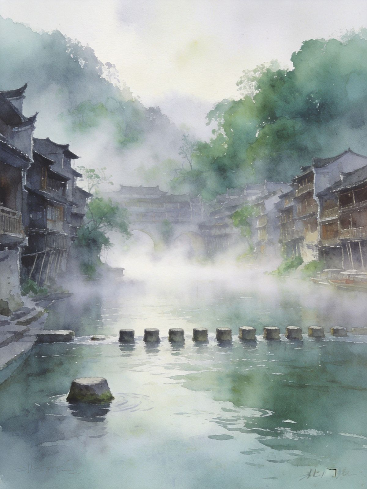
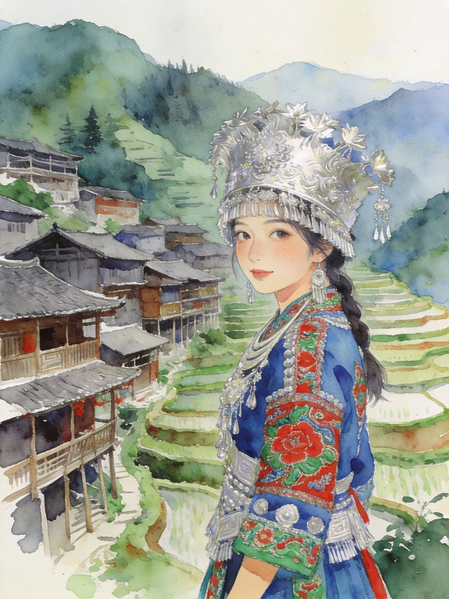

封面
总览
2天版
3天版
核心景点
沱江夜色
苗寨体验
美食
避坑贴士
FENGHUANG · 凤凰古城
沱江边的小城
吊脚楼 · 夜色 · 边城
2024升5A
沱江夜景
晨雾跳岩
苗寨
中国最美丽的小城 · A5 口袋卡 · 慢游
1
/ 9
凤凰 · 边城慢游
动线总览
2-3 天怎么选
Route Overview
2天
1夜
经典够玩
D1 古城漫游+沱江泛舟+夜景；D2 清晨晨雾+沈从文故居+逛吃返程
3天
2夜
从容+苗寨
D1 古城+夜景；D2 苗寨一日游 / 芙蓉镇；D3 晨雾+伴手礼返程
串联
张家界天然一线
常与张家界一起走；到芙蓉镇约1.5-2h车程
TIP
凤凰是慢游型，
节奏赶反而可惜
；核心在沱江两岸。
2
/ 9
凤凰 · 边城慢游
2天1夜 · 不绕路
Day·1
古城漫游 + 夜
入住江景民宿
→
虹桥
→
北门跳岩
→
沱江泛舟
→
夜景
🌉 古城核心动线
虹桥风雨楼 →
北门跳岩
→ 万名塔 → 雪桥，一步一景
17:00
沱江泛舟
，看两岸吊脚楼；19:00 虹桥二楼看夜景全景
Day·2
晨雾 + 人文
06:30 跳岩晨雾
→
沈从文故居
→
熊希龄故居
→
逛吃返程
🌫 晨雾仙境
清晨无人仙境，
出片率100%
；再去沈从文故居打卡《边城》
TIP
住
回龙阁/沙湾
江景民宿，望沱江吊脚楼最佳，假期提前订。
3
/ 9
凤凰 · 边城慢游
3天2夜 · 深度湘西
Day·1
古城 + 夜景
古城漫游
→
沱江泛舟
→
夜生活
🌃 首夜
沿沱江逛吊脚楼，看万家灯火倒映水面
Day·2
苗寨体验
苗寨一日游
→
拦门酒
→
苗服 / 银饰
👗 湘西民族风情
山江苗寨
民俗氛围浓；可选银饰/蜡染非遗体验
拦门酒 + 苗族歌舞、苗服租赁（古城内约50元也可体验）
Day·3
收尾返程
晨雾
→
闲逛古镇
→
伴手礼返程
TIP
三日版可串
芙蓉镇 / 矮寨大桥
，湘西环线更丰满。
4
/ 9
凤凰 · 边城慢游
古城九景
核心打卡点
Must See
📍 古城必访
虹桥风雨楼
— 地标，二楼观夜景/全景黄金机位
北门跳岩
— 清晨晨雾机位，石墩踏过沱江
沈从文 / 熊希龄故居
— 《边城》诞生地
万名塔 / 雪桥
— 夜景倒影绝美，人少出片
南华山 / 东门城楼
— 登高俯瞰整座古城
🎫 古城街区免费；九景联票约148元（学生半价）

北门跳岩 · 晨雾
TIP
看雾看夜景
掐好时间点
，是最值得留的原因。
5
/ 9
凤凰 · 边城慢游
凤凰灵魂 · 夜景
沱江夜色
Night on Tuo River
✨ 最佳时段
19:00-22:00
，灯亮后前2小时人流相对不挤
📸 夜景机位
虹桥两侧
两岸沿线 ·
万名塔/雪桥
倒影
沱江夜游泛舟
，小船划过灯火倒影，体验感一绝
吊脚楼 · 万家灯火
TIP
入夜后古城才真正活过来，
白船看水墨夜船看浪漫
。
6
/ 9
凤凰 · 边城慢游
民族风情
苗寨体验
Miao Village
📍 推荐苗寨
山江苗寨
— 周边经典苗族村寨，民俗氛围浓
老洞苗寨
— 可选银饰/蜡染非遗体验
德夯 / 边城 — 三日版可串芙蓉镇或矮寨大桥线
🎎 体验清单
拦门酒 + 苗族歌舞表演
苗服租赁拍照（古城内约
50元
更省事）
银饰锻制 / 蜡染手作（非遗工坊）

苗族银饰 · 刺绣
TIP
苗服拍照古城内就能体验，
不必专门进寨
；进寨多为拼车/包车+门票，提前问清。
7
/ 9
凤凰 · 边城慢游
舌尖湘西
凤凰必吃
Local Flavors
🍜 古城招牌
血粑鸭
— 鸭血糯米+焖鸭，茶油姜蒜炒，古城第一魂
苗家酸汤鱼
— 酸辣鲜鱼汤，苗家夜宴头牌
姜糖
— 手工熬制甜辣姜香，伴手礼首选
🌶️ 街头烟火
米豆腐 / 擂茶
— 几块钱一份的烟火气
血酱鸭 / 腊肉
— 炭火熏制咸香
TIP
古城美食平价友好；血粑鸭认准老店（如俊子饭店）。
8
/ 9
凤凰 · 边城慢游
出发前
交通与避坑
Getting Around
🚄
怎么去
高铁到
凤凰古城站
（张吉怀线）转接驳；也可张家界/怀化中转
🎫
进古城免费
收费的是「九景联票」，别被路边拉客高价坑
🏨
民宿提前订
假期江景民宿紧张，回龙阁/沙湾首选
⏰
掐时间点
晨雾、夜景都有最佳时段，错过就可惜了
☔
湘西多雨
带伞+防滑鞋；搭配张家界可串线更值
9
/ 9
← 返回小册子主目录
Insta360
记录美好
记录美好生活
相机指南 · CAMERA GUIDE